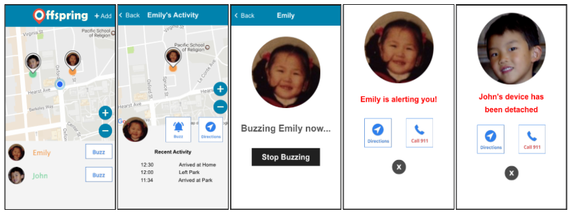
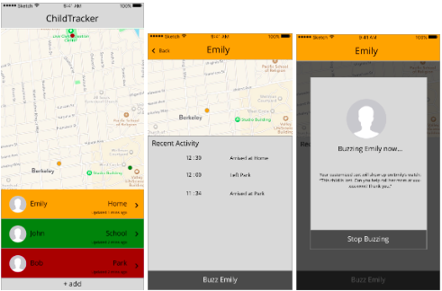
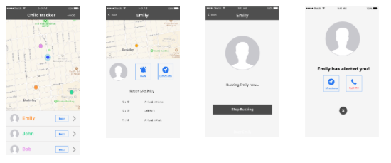

Sarah Tencher
Offspring
For many parents, the safety of their children is a constant worry. Whether they are at work or their children are at school, parents are forced to spend time away from their children, which can be distressing and worrisome. Our team of 5 dedicated students researched, prototyped, and iterated to solve this problem as a project for our UI Design and Development course at UC Berkeley.
Our solution is Offspring, a mobile companion app and a durable low-cost watch device for children that allows parents, guardians, and caretakers to easily track and communicate with their children.
Features include:
- Location Tracking — viewing the location of a child on a map, allowing users to always know where their children are.
- Monitoring — users not only have the ability to see where their children are on a map, but also a list of their child’s recent activity and whereabouts.
- Buzzing — The user can send a “buzz” to the watch, which is a small vibration that the child will feel, the meaning of which should be discussed between the parent and child prior to use.
- Panic Notification — If the child is in danger, they can press a button on their watch to send a panic alert to their parent. The companion application will switch from any screen to a panic screen informing the parent of their child's danger. The parent can then navigate to their child or call 911.
- Detached Watch Notification — If the watch becomes unlatched, the parent will be notified through the app.
Initial Iteration
Designing with parents in mind, we started by diverging and converging on some important features. Tracking a childs location on a map was and integral part of this product from the beginning. While the design of this feature evolved over time, the core functionality remained.
Initially, other important features included monitoring recent activity as well as buzzing the watch device. Once we decided how these tasks would interact and generally look and feel, we began to create prototypes and test them with real users. Using InVision and Figma, we created a low-fi prototype to test both the look and feel of our app, as well as its core features. Participants were all parents of young children and were recruited outside of a local children's museum.
Users can see color coded representations of their children on a map, as well as their child’s recent activities and the times in which they arrived and departed from key locations. Finally, users were able to simulate buzzing their child’s device. At this point in the design process, buzzing was defined as emitting a loud sound from the device along with a displayed message intended to help passerby’s get this child to safety.
From user testing we learned that many people were confused with one of our tasks, to find walking directions to a specific child starting from the map screen. We realized there were too many maps on different screens was causing this confusion. We decided to reduce the number of map screens, as well as redirect to googleMaps for navigation directions. Users also found the buzzing feature troublesome, as the loud sound might attract unwanted strangers to the children, which would be more harmful than helpful.
Second Iteration
With the feedback from our initial iteration, we decided to make buzzing a more casual form of communication between parents and children and to add a separate feature for more dangerous emergency situations. Buzzing became a simple vibration of the connected device, the meaning of which would be decided between parents and their children prior to usage. Additionally, we added a panic button to the device that sends a panic notification to the parents phone. Pressing the panic button on the device launches a panic screen that takes precedence over any other screen on the parents connected app, creating a sense of urgency. In response to receiving this notification, parents can decide whether they want to navigate to their child or notify the police and easily execute this decision via the panic notification screen. In this iteration, we also decided to make our design less colorful and to stick to a simpler scheme. This enabled users to better navigate the app and notice which features are important and available to them.
Using an interactive Kinoma prototype, we ran a usability study, with both qualitative and quantitative measures, with three separate parents. We found that our implemented features were intuitive and easy for users to quickly perform. This gave us the confidence to continue developing our app and implement and design additional features. We focused on maintaining consistency throughout the product and created some branding designs.
Final Iteration
In the final iteration, we refined users interactions with the map to locate their children, which included implementing zooming functionality. A big concern for the users we tested was that kids might take off or lose their watches. To account for this, we added a ‘detached watch’ screen to notify parents when this happens. Once the watch becomes unlatched, the parent will get a notification on their phone with the option to navigate to the watch or notify the police. Finally, we implemented the onboarding process and intial connection between the watch and companion application, ensuring the watch can only be tracked by the parents by requiring a code from the device itself.
Future Directions
With more time and resources, I would love to focus more on the visual design of the app. I feel that the current design lacks luster and appeal. While it is functional, it is by no means as beautiful as it can be. I would also like to perform another round of user testing to ensure that the changes in functionality are recieved as expected. Finally, I would love to present this product to parents and teachers to gauge whether this is a product that they might actually purchase and use.